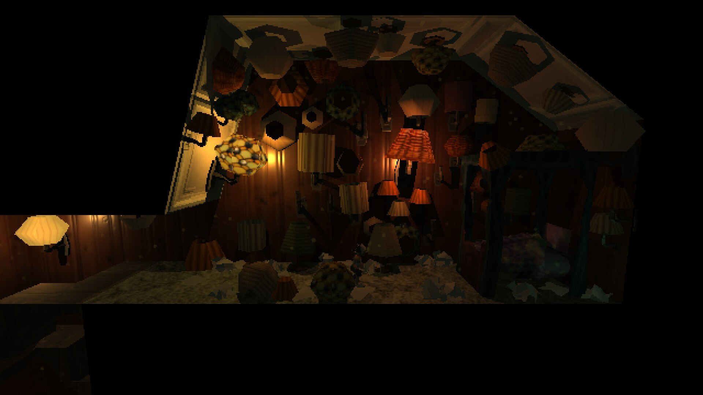
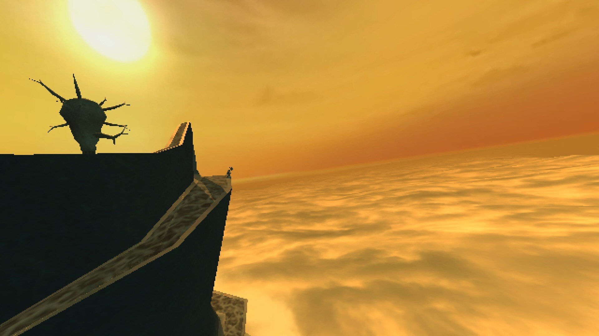

Strange Gaming Diaries: Anodyne 2: Return to Dust, by Analgesic Productions
this is the first time I'm writing about a video game fresh after having played it! most of the posts in this series have me been performing catch-up with the games I played from this year and the last. but I just finished anodyne 2 earlier today at time of writing, and so the experience is still a lot more present in my heart, and I'm still reeling from a lot of the things this game did.
there's a LOT to unpack with anodyne 2, and I struggle to come up with a way to format it that won't get wildly out of hand. (update: unforeseen to the pengy of a few days ago, it still ended up getting wildly out of hand.) a simple summary that picks from all parts of the game truly doesn't do the storytelling justice; everything builds on top of itself so perilously high that to attempt to describe the thing in its totality is to diminish the sheer wonder of its process of construction.
so I'm going to give you my impressions on various parts of the game as I encountered them, and see where we go from there!
anodyne 2 takes place on two different levels: the 3d exploration segments, and the 2d "nanoscale" areas that you access by entering the minds of certain denizens of the world. both of these areas take after various older games in their influence, with the 3d exploration segments being reminiscent of ps1 platformers like jak & daxter or spyro, while the 2d segments are prominently inspired by older zelda games, but with an inhale/exhale mechanic that also brought kirby to my mind! this is a good thing. when things remind me of kirby it's because they're good
narratively, the game begins very simply, with you being introduced to nova and her two moms, going through some tutorial dungeons that also seemingly serve as an allegory for childhood, given the task to fight against the sinister encroaching force of dust, you have a hub town full of NPCs to chatter to, all that good rpg stuff.
the writing throughout the game is also noteworthy in its offbeat, ever so slightly uncanny style. nearly nobody in this game talks like a normal human person; most NPCs seemingly exist for the facilitation of absurdist bits moreso than to actually communicate a personality, and will expound their personal thoughts in bewildering amounts of detail at the slightest provocation, often demonstrating an apparent knowledge of non-diegetic aspects of the game in the process. this, to be clear, is not criticism, and is in fact an essential part of the game's humor. it's like if the non sequiturs offered by various minor characters in earlier pokemon games were written to actually be funny on purpose, like a knowing wink from author to player, and so this game ended up making me laugh more than most I can recall.
not to mention, the narrative conceit of nanoscale is exciting! I always love it when games do the thing where the internal mindscapes of characters are made into playable environments. it offers all kinds of fun opportunities for diverse visual designs, and they're extremely useful as a tool for storytelling and characterization. the game is quick to have fun with this, with levels ranging from decrepit old attics to fire-spewing construction sites, all with solid puzzles that constantly challenges your understanding of your toolkit. it's fun!
it was upon completing the last of the four dungeons I encountered in the first city area, the nanoscape of gustine papellum, that I started to suspect that the game was going to be turned on its head at some point. where the dust infections of the other three characters manifested as hazy memories, uncontrollable anger, or actually just straight-up asthma, gustine recounts that the dust has...caused their entire body to become a giant tongue, and now they're going insane from the sheer sensation of it all. but when you kill the boss and deal with the dust crystal, gustine proceeds to launch into a speech about how the world was so much brighter and more delicious when they were young, and how those flavor started to dull and turn to ash with age until the dust returned and reignited their senses all over again. when it's all said and done, gustine laments that they were a fool to give in to their base desires, remarks that their tastes are dimming once again, and thanks you for it. everyone acts like this is an unambiguously good thing, and all other implications are quickly brushed aside. but hold on, the dust was claimed to be a force of entropic decay—why was it seemingly counteracting this apparent symptom of age? and what's all this talk about sinful desires when the problem seemed like it had more to do with the fact that a person's entire body had been turned into a tongue? why was the conversation around dust suddenly becoming so moralized? and hold on, why is the game's subtitle return to dust if that's what we're explicitly told to keep from happening? this seemingly simple narrative premise is quickly revealed to have uncomfortable thematic undertones of conformity and repression, and this becomes explicit once you reach the game's second main area, the blue vale. the characters you enter the nanospaces of in this area demonstrate problems that are more realistically grounded than the exaggerated predicaments of cenote's people, and the conclusions they come to after you clear their dungeons follow the same vein as gustine from earlier. here's a great example: lonwei, a scientist you meet in this area who begins your encounter by going on about the breakthroughs in her experimental research on dust, suddenly turns right around to concluding that the whole thing was a pointless exercise in humiliating futility the moment you finish the associated dungeon. also by the way, you don't enter her mind for said dungeon, you actually enter the nanoscape of her robotic "brother" clonwei. you then proceed to basically destroy clonwei from the inside out while his creator nervously laughs away the recreations of his painfully realistic social awkwardness that endlessly play out in his own mind. you do that in this game, and once again, this is framed by every other character as you saving these people. this isn't even the most heartwrenching part of the blue vale, though. at least, it wasn't for me. that was geof, the near-motionless stone man you find at the bottom of a pit from which a strange series of structures emerges. when you talk to him, you find him torn between being left to wither away, and an obsessive need to keep digging. when you first enter his nanoscape, though, you aren't met with enemies or puzzles. just gravestones. those structures were a town, it turns out, and he was their mayor. but there was a fungal infection that he believed could be solved by digging it out, and so he lost himself to that single obsessive goal, despite what all his friends and loved ones tried to tell him. geof talks to you as you discover this, his memories returning to him and painting an excruciatingly full picture of the story of the town, and of how his insistence to dig was tearing apart the lives of all those around him. it turns out that they aren't even dead at all, they just left as he started growing outright delusional in his devotion. that he believed them to be dead was just another symptom of his withered mind. so of course, after giving him the opportunity to see his mistakes unraveled in their entirety, and letting him hear the desperate pleas of his people one last time, geof ends up recognizing his mistakes and allows himself rest at last, right? no. he thanks you for granting him clarity through your cleaning, and states that there's still work to be done. then he stops moving, and never moves again. I haven't mentioned it yet for the sake of narrative pacing, but this nanospace was also the first time (of a few) that the game left me frozen in my chair and staring at my computer screen from having been struck overwhelmingly emotional by its writing. it was a line spoken by one of the "stone larva" creatures you encounter in geof's nanospace, which represent his inner thoughts during the process of his digging—or, as they metaphorically describe it, his building of a great tower. I try not to describe events in a game too heavily in these writings, but I hope that by doing so this time, I've given you an understanding of the weight I felt settling onto my heart when I saw this line. this is the exact moment I started to understand what kind of game anodyne 2 was going to be, when these themes of pain, decay, and the desperate need to justify one's own life revealed themselves and gave me an idea of what I was going to be experiencing. the narrative role of the dustbound was something I saw coming in the broad strokes. by the time you end up meeting them, the game has made it pretty explicitly clear that your stated mission isn't to be trusted, and I like that the game doesn't try too hard to make the dustbound sequence a big shocking twist while still effectively using it to inject new and intriguing themes into the story. it's revealed that nova is subject to human needs of food and sleep while beyond the center's influence, and is also extremely socially underdeveloped. it becomes extremely evident that nova's upbringing has left her incapable of handling herself in situations outside of what she was raised to prepare for, and so she flounders. this whole sequence hit really close to home for me. not only do I have bad enough executive dysfunction that I also struggle to eat and socialize, but I also went through the kind of sheltered and neglectful upbringing that left me unable to handle a lot of things that I suddenly needed to learn really fucking quickly once I was out on my own, and just like nova, it's only through the kindness and compassion of friends and loved ones that I'm able to grow those skills. and also just like nova, I was obsessed with purpose, with success, with the goals I needed to fulfill, because that was all I'd been taught to ever know, and that wounded me in a way I'm still recovering from, and that I still regress to in my darker moments. and more than just the storytelling, there are even a lot of design decisions in the dustbound sequence that made them a super compelling point of contrast to the entire rest of the game. that purposefully stilted npc dialogue I mentioned earlier is replaced by a much more natural and warm tone, and the character designs are similarly a lot more natural and inviting than the outside world's more abstract weirdness. even the way the dustbound village is full of fucked up glitchy pixels and bright garish colors manages to create a feeling of vibrant, gleeful chaos in a way that characterizes them perfectly and contrasts against the sparser, less saturated landscapes of new theland. nova also takes up gardening and putting on wrestling shows, both of which utilizing the same gameplay as the nanoscape dungeons from before, but now instead of working towards the objective, numerically quantifiable goals of the prism, you're helping the farmers of the village or giving an entertaining performance where no one actually gets hurt. these gameplay activities, previously affirmations of nova's purpose as nano cleaner, are recontextualized and framed as ways that she can contribute to this community and foster these connections with people. it was really heartwarming to be able to spend time there. but nova is torn, and so at the end of every day she retreats to the handfruit haven, a place created by palisade (who, by the way, is nowhere to be found by this point) with orderly and pristine pixel art that starts feeling more uncanny the more time you spend in the village. inside this place are what are clearly instruments of play, but that nova asserts are actually objects of devotion by which she might reconnect with palisade. this rhymes wonderfully with the farming and wrestling gameplay sequences of before; in this place where one is able to play however they want, nova regresses back to her previous conditioning and coldly breaks the whole thing down into self-sacrificial ritual, because she struggles to conceive of any other future for herself besides that which these practices will supposedly provide. and as time drags on and her efforts are revealed to be in vain, she suffers a total emotional breakdown, which is itself something she's ill-equipped to handle. the whole thing establishes nova's character arc in a compelling enough way that she's become one of my favorite video game characters ever. just when I thought anodyne 2 was done throwing me for a loop, the introduction of metacoins gave me a whole new set of narrative themes to chew on. suddenly, you have this new representative of the center talking about enhancing your investment in the world of the game and introducing new mechanics like he's reading out exciting new patch notes. suddenly, the game takes on a fascinating new duality of themes, with the center and the video game itself starting to blur together into a single narrative entity. just as the center tries to guide nova back onto its path for her in the narrative, so too is the game suddenly dangling a bunch of shiny new collectibles in your face to try and get you back into the idea of getting cards and gathering dust and making all the numbers go up. and although I did indeed spend a little while running around grabbing coins and making numbers go up, I found myself realizing something: I wasn't paying any attention at all to the environments and characters I'd been taking in with such curiosity beforehand. these areas of the game I'd explored had suddenly been turned into a series of paths along which I could gather these coins. the believability of these spaces as living worlds was suddenly skewered by the presence of these pointless collectibles. not only that, but the outer sands felt so weird to explore. it's such a transparently artificial space compared to the other areas—where map transitions made various overtures towards fitting into the same geographical space as one another, the maps in the outer sands are completely disjointed areas with inexplicable videogamey forcefields along their edges, and are connected by equally inexplicable magical floating gateways. not only that, but very little in these areas doesn't serve some kind of gameplay purpose, it's almost all either npcs who guide you towards progress or environments you're meant to travel for coins. it's even noticeably easier to break the level geometry and end up out of bounds here compared to other areas, or at least it was for me. the major thought I had while playing was how strange and...self-flagellating this all felt. like the game was hollowing out its own environments into spaces engineered solely for the collecting of items and the making of progress. it's such a weird and harrowing metanarrative twist, and it completely shifted the mood of the last few hours of the playthrough to this surreal and uneasy experience. as for what you actually get from the metacoins, they are of course largely without benefit. the logs you can get are (for the most part) just evocative word salad, and the "metapoints" just pepper the landscape with even more garbage that purportedly give you interesting insights into the world but mostly just enthusiastically explain basic and obvious design principles like "we put landmarks in our maps so you know where to go!" and "we put TWO exits in this area so you can go wherever you want! wow! the choice is yours!" and sometimes they even blatantly lie, like the one that tells you that the super low draw distance on the map is actually on purpose so it feels like the world is reacting just to you! whoa! don't you feel so special! and so on. then there are the "unzones", where the character "maryshaw keytawny"—a mash-up of the two developers' names, marina kittaka and melos (formerly sean) han-tani—talks through "metapoints" scattered around the areas about the creation of the games' worlds by two mystery figures named M and S. it's neat behind-the-scenes stuff, and shows off a lot of in-development assets and test levels that act as neat little glimpses into the bones of game dev. but also there's...something kinda weird about the unzones. the character of maryshaw mentions "having an eternity living in these unzones" and will occasionally break character to comment about their love life or having their first line in one of the areas be "Whenever I feel sad, I come here to feel empty." there are also these random fully formed models of nova in various animation loops found in some places that supposedly represent spots in the development timeline where nova hadn't even been conceived as a character. it's weird. it feels like there are embellishments being made that run aground of the stated intention of just being these cute little extra developer areas. and then the weirdest thing of all came at the tailend of one of these metapoints, which read: "(By the way. There are no other Metainfo points here.)" alarm bells were immediately ringing. that felt like such a specifically explicit point of clarification to make, especially in a zone that you need to have already unlocked a few other zones to have gotten to, and especially especially given the aforementioned weirdness going on with the places. for that matter—and I don't know how to exactly explain this—there felt like there was something weird about the level design of these areas that seemed to encourage fucking around and finding secrets. areas that are otherwise fully formed and textured will have a random untextured ramp to seemingly nowhere. platforms will be only just barely too far apart from one another to get across. and why state that there are no other points there when you hadn't already done that, unless it was actually meant to be a secret encouragement to sniff around for secrets this entire time?? it was after about five minutes after my attempt to scour the area for secrets that I realized, oh. dammit. after thinking I was so far above it all and knew what they were doing, the allure of the metacoins still got me in the end. I dunno if this was intentional or if I'm just seeing patterns where there are nothing but coincidences, but regardless, it hit me in a way I'm still reeling from a little bit. I even looked it up after the fact to confirm, and true enough, the game's own developer has confirmed that there are no secrets in the unzones. in that moment, I found myself questioning all of those reflexes that had brought me to my conclusion. were those things that I thought were weird embellishments actually normal, or else maybe just thrown in without any real purpose? were the occasional breaks in maryshaw's character actually just quirky little asides that the writer included for fun? what did it say about me that I took all of this as a sign that I was being deceived, and that there were secrets being hidden from me? I realized that I had done the exact thing I'd accused the world of the game as doing, disregarding the intention of these worlds in favor of obsessive secret-hunting. maybe the point all along was to get me to jump at shadows. maybe I'm just so poisoned by youtube's video game lore economy that it's all my own fault. either way, I was deeply impressed. god. I could probably write a whole fucking essay about this single sequence alone. I might end up doing it right here! everything about it, from stem to stern, is at once such a fascinating anomaly from the entire rest of the game and a culmination of every single one of the game's narrative themes. because although there is of course the complete shift in setting and general tone of the writing from dramatic and fantastical to excruciatingly grounded in reality, nora's story ends up hitting a lot of the same notes heard from throughout the game. everything just becomes a lot more real for those brief, immaculate few minutes. nora goes through soul-crushing drudgery at her shitty minimum-wage job. a neglectful parent haunts nora's nightmares. nora laments her inability to be a better friend, or to get a better job, or to generally live in a way that's worth a damn. and when speaking with her loved one, nora doesn't know how to live with the fact that she'll always be herself. like, fuck. christ. as a girl with severe depression and a rotating roster of shitty living situations, this hit me like a brick through the window. I can't think of many other points at which a piece of art has made me feel so painfully seen. certain lines in this section felt right out of my hypothetical internal monologue, and the undercurrent of desperate hope for something better that eventually clawed its way out from the ennui made me feel a surge of all kinds of unknowable feelings in my chest. now, with those compliments to the writing said, there are still a lot of other things to unpack with this sequence, and I should probably start with the most immediately obvious one: what's up with nora being so blatantly based on nova? what about the email making explicit mention of anodyne 2? is this sequence meant to suggest that there's a "real world" outside of the game we've been playing in? did nora click on a spooky evil email and then she got turned into nova and that's what's actually been happening this whole time??? I found myself asking similar questions, then quickly realizing that I...didn't actually care? and that it probably doesn't matter? I mean, it's like my whole experience with the unzones, right? the impulse to treat this sequence as the revelation of some kind of Lore feels like the result of the internet putting poisons in your brain that make people insist that even slightly abstract video game narratives are puzzles to be solved. the sequence definitely does purposefully evoke a lot of comparisons with the rest of the game: vacuum cleaners keep popping up in various faintly foreboding places, and during the chase sequence with the gargoyle, the dimension dive icons even start inexplicably appearing on the floor. but No Such Scene makes no effort to conclusively elucidate anything that happens in it, and I respect it deeply for that commitment to its difficult combination of realism and abstraction. for me, the weird gargoyle parts of No Such Scene reminded me a lot of how the continued need to survive in the soul-crushing hell of working class life has left me in a state of being constantly overwhelmed by the pressures of starvation, destitution, and increasingly severe mental illness. I've gotten very used to a life where it feels like just one more unexpected disaster could very well be the end of me, and once you live in that space for long enough, it follows you wherever you go. you start seeing catastrophe everywhere you look, and you become desperate for any kind of escape from it. also, since I feel like I have to say it somewhere, fuck, the parts of No Such Scene before the actual bits with nora in them scared the shit out of me. game models/sprites getting glitchy and fucked up is something that always freaks me out, so I spent the entire dimension dive sequence feeling faintly like I was gonna throw up and the brief nanoscape sequence bracing for the worst. it was great, and made the reveal of nora that much more of a twist! one last detail I want to point out: in the development history document included in the release of the game's source code (which is deeply interesting, go check it out!) one of the bulletpoints for the second quarter of 2019 is "No Such Scene appears out of the ether". I'm deeply curious as to whether this is just a cute bit of writing, or if the sequence came on just as sudden and strong for the developers too. there's something compelling about that idea, isn't there? here's the other thing about the last few areas in the game that struck me: npc dialogue becomes a lot more contemplative and philosophical out of basically nowhere. the odd couple of gravis and stavros engage the player in musings about the manuscript of life upon desert sands and the smallness one feels when looking up at the stars, and the tremuloids speak in baffling knots about the nature of the past, present, and future. one particularly noteworthy example of this is when an npc in the jrpg pastiche world, who plays out a hilarious bit that makes light of the reflex for players to turn away from obvious plot progression in search of side content, caps off the sequence with a fit of crazed rambling that fits the same humorous tone of their previous dialogue but suddenly swerves into panicked existentialisms about the seemingly irreconcilable nature of the lived experience with the cosmic truths of the world. the last few lines are even "how is a story anything but a lie? does it even matter?" it's the game stepping its storytelling up a level and engaging with the player on deeper levels as the game goes on, and it creates a simultaneously fascinating and lowkey scary feeling of watching something unfurl in front of you. the game is never content to have its big metanarrative twist and then settle back into the usual rhythms, instead constantly shifting around you and building further on those ideas. there's a reason I said before that talking about the game gradually like this is what I've found to be the best way to talk about it! also found in the outer sands are nanoscape areas that aren't anybody's mindscape at all and are instead connected to what I learned after the fact was an homage to the first anodyne game's main hub area, a concept that goes pretty much totally unacknowledged by the plot but that I accepted right along with all the other changes. one of them is that aforementioned jrpg pastiche area, but the other is the pastel horizon, which contained yet another bit of writing that completely fucking destroyed me. the pastel horizon is an area about death. you end up contacting the lost spirits of two dead characters and hearing about their lives. one of them, amago, is a fish that lived a dual life in the water and on the surface, and recounts having returned to the ocean after quite some time on land only to find all their loved ones lost to time. the other, fukuchi, explains that she came to recall a past life before she first awoke on her home island, with her need to explore the seas beyond ultimately leaning to a watery grave. then you hop on a train to a "ghost bridge", a transitionary place between this world and the next. there, you encounter a humble bridge builder who tells you about the purpose of this place, and the kinds of souls that end up here—wild ghosts, they're called, people who slipped through the cracks and died without anyone to remember them by, people who were poisoned and annihilated by uncaring systems or who simply vanished without a trace. the builder builds the bridge for them, so they can reach a place where they can finally make those connections. even these most forlorn of souls, after all, need someone to take care of them. everyone does. I've felt at many times like I'm doomed to become something like a wild ghost. you have no idea how much this scene means to me. the game acts like the only way to finish the game is to achieve the center's ultimate goal and sterilize the world into cold painless nothing, but there is of course another way. returning to the dustbound prompts a reunion with elegy, in which nova very nearly succumbs to horrible agonizing fear, unable to stop thinking about the ways in which this contradiction of everything she's ever known will utterly destroy her. the presence of the glandilock seed, a seemingly innocuous and mostly unremarked upon presence inside of nova's mind that acts as her connection to the center, starts to gain intense narrative focus as a force of doubt, of compulsion back towards her programming. its disapproving scowl sits like an ill omen to the side of the main screen, and its tendrils twist nova's thoughts away from the independent thought she tries to exercise. after bringing nova back out of this panic attack, elegy lays out the true nature of the glandilock seed—and by extension the center itself—in painful detail: if there was any doubt as to the parallels between the center's role in nova's life and that of an abusive parent, this is when those themes are called upon in sharp clarity. when nova devises a plan to confront the center, it involves her convincing its agents, the people she formerly thought of as her family, that she destroyed herself, and for them to fashion a new cleaner to replace her. then, she destroys the glandilock seed inside this girl, zera, to free her of the center's influence and allow her a life of her own. what I find so poignant about this plan is that nova's glandilock seed remains. when the game ends, it's still there in her mind, and she feels its presence with her every thought. it's clear that she expected to sacrifice herself and be rid of all this suffering for the sake of this new life, but she doesn't. she's still alive, and she's terrified of that. she's terrified of having survived, because now she knows she has an entire lifetime ahead of her that she doesn't have any conception of how to handle. and of course it would be this way. of course the lingering influence of those traumas will remain. of course nova survives. the message of the game in these final moments is that life is full of suffering and unfair burdens, that the world is a place where we will be senselessly hurt and made to recognize that there are no lessons to be learned and no advancements to be made through that hardship, but that we still must survive those things if we are ever to experience the moments of connection and love that make us who we are—if not only for ourselves, then for the sake of a more hopeful future for those who need not go through that same pain themselves. for a game to tell such a profoundly hopeful story while also acknowledging the grim ordeals of existence made me feel spoken to in a way that other similar stories have failed to manage. it makes me feel a little less ashamed of being broken, y'know? it can be hard to give myself that forgiveness with how long I've been alive and how many opportunities I keep telling myself I've had to heal and generally pull myself together. games surrounding mental illness and trauma will often revolve themselves around these cathartic moments of climactic resolution, but for people like me that's not how it plays out. healing hurts, and not often in a very exciting way. it leaves ugly scars and you're going to keep realizing that you need to do more of it than you thought. I admire this game for respecting that. the best part is, this isn't even everything I could talk about in the game. not only are there small details and even entire areas that I've left completely unremarked upon for the sake of my narrative flow, the story touches on so many more themes than these personal and gritty traumas. you could easily read the entire narrative as an allegory for the desperate attempts to make meaningful art under the cold and callous oppression of the modern world, and this is something the game textually supports in various places. through its use of abstraction and willingness to let itself ramble and go on tangents in its storytelling, anodyne 2 manages to make a story that's about so many things at once and has deeply thought-out and heartfelt things to say about all of them. it's one of the most compellingly honest games I've ever played, and I really want to thank melos and marina for everything they put into this. I normally let that sentiment go without saying, but it feels right to make it clear. this is a special kind of game, and I want to make sure it's cherished the way it deserves to be. like we all deserve to be, in a way.but, of course, things don't stay this simple for long.

Has your life given birth to a beautiful moment? I am waiting for that moment, suffering, waiting for this tower to grow. One day, this vile world will sparkle with its beauty...
then, I climbed the spire for the first time.

and then the game put goddamned coins everywhere.

anyway, on that note, here's the part where I talk about No Such Scene.
that's just one area in the outer sands, though.
we come to the ending.
Does the Glandilock Seed help you to understand the true nature of your fears? Does it lift you up when you reach for something more beautiful and true within yourself? Or does it wield your fears against you, beating you down with insecurity until you believe you have no choice?
buy the soundtrack on bandcamp!
follow melos's newsletter! (it also doubles as the newsletter for analgesic productions news in general)
catch marina on twitter!
maybe follow melos's twitter too!
also hey hi this has nothing to do with anodyne 2 but I feel like I should mention it: did you know that marina kittaka, one of the two people who made this video game, ALSO made the "zonelets" series of templates for neocities, which just so happens to be powering literally this exact blog you're reading right now?? if you've ever thought to yourself that it would be nice to have a website of your very own, I highly recommend giving it a try! it did a lot for me when it comes to lowering the perceived barrier to entry for blogging online and having a space I can make into whatever I want, so I hope it can do the same for you too.
Comments
note: these comments are manually moderated, so they have to go through me before they become visible!